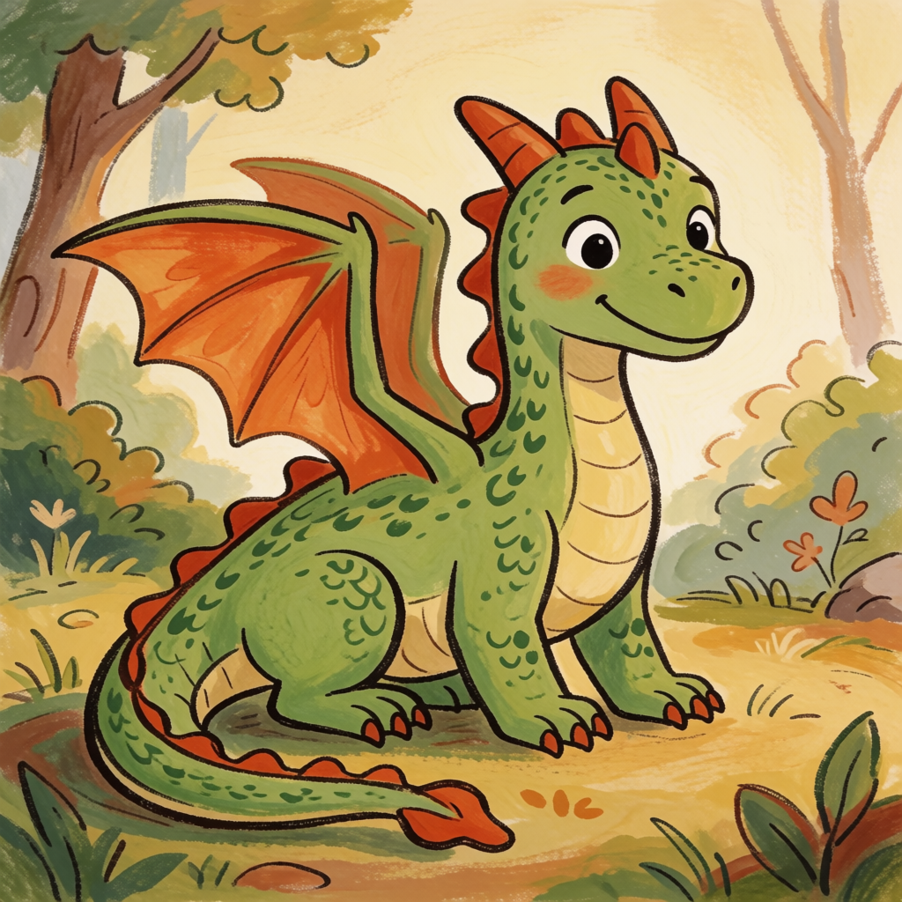
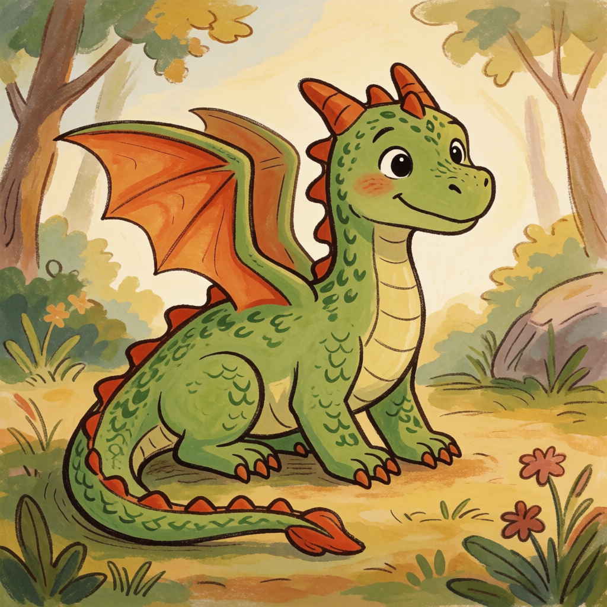
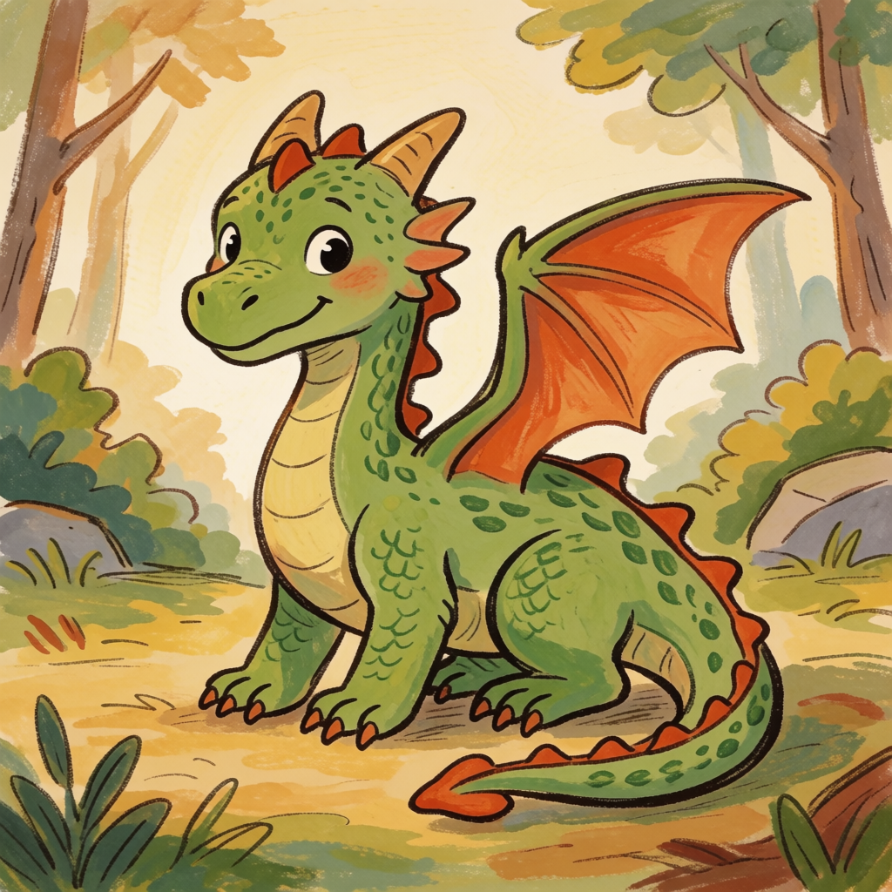
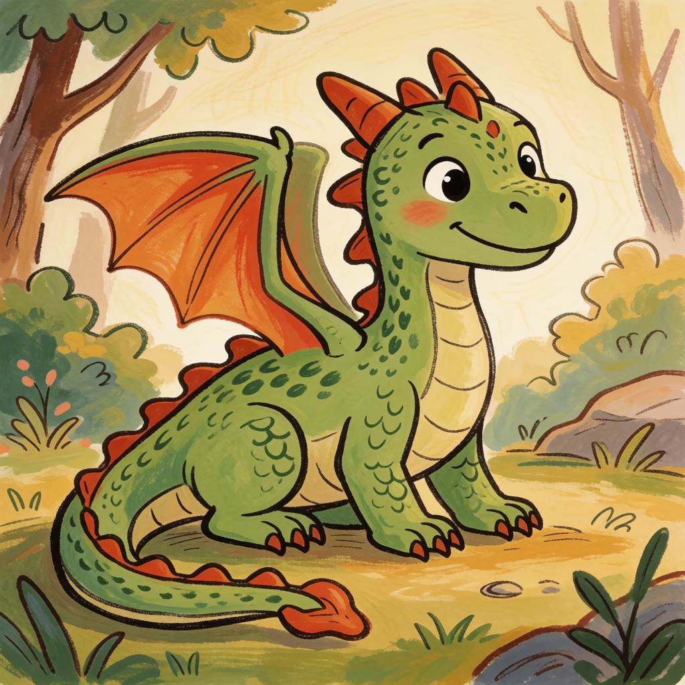

QLOBE Studio · Krea2 art-direction gate
The selected concept becomes the identity reference for the neutral GPT Image 2 master and six pose sprites. Click any image to inspect it at full resolution.



